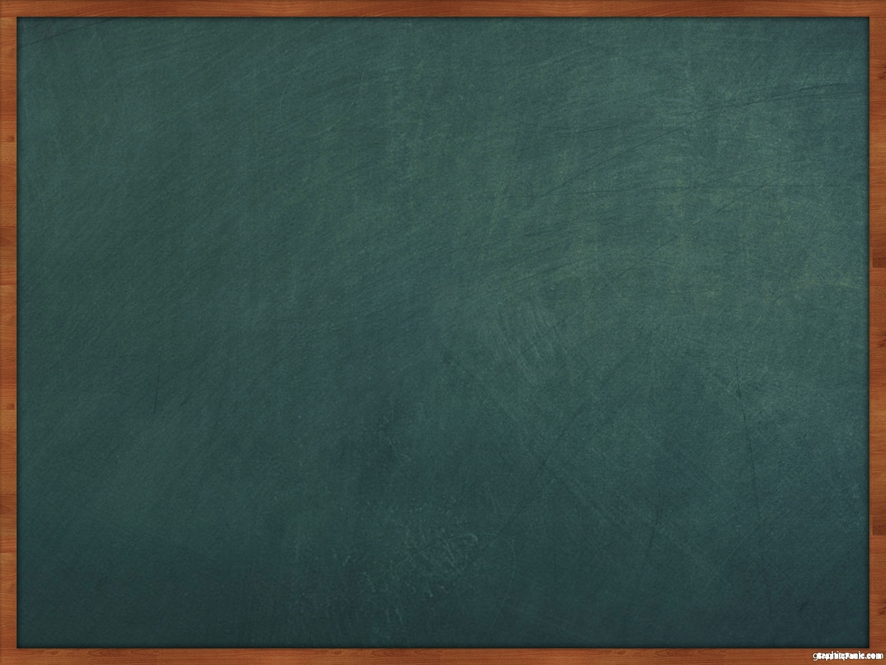

This is a simple game of darts. However,
since the controls may seem a bit foreign to
some people, the first throw is completely
penalty free, if you miss it you lose nothing!
To launch the dart, press the button in the bottom
right when the ball is in the spot you want on the bottom of
the screen, then choose how hard to throw it and hit
the button again and your dart will go flying! The game
ends when you miss a dart throw.
Happy Playing!
Okay!